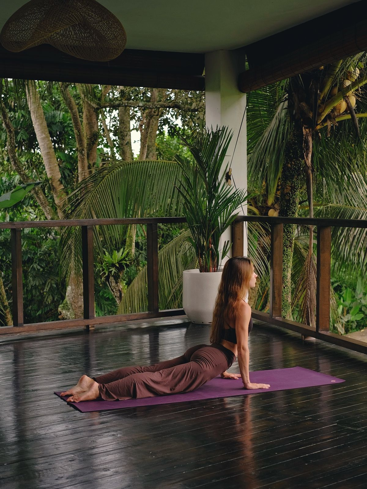
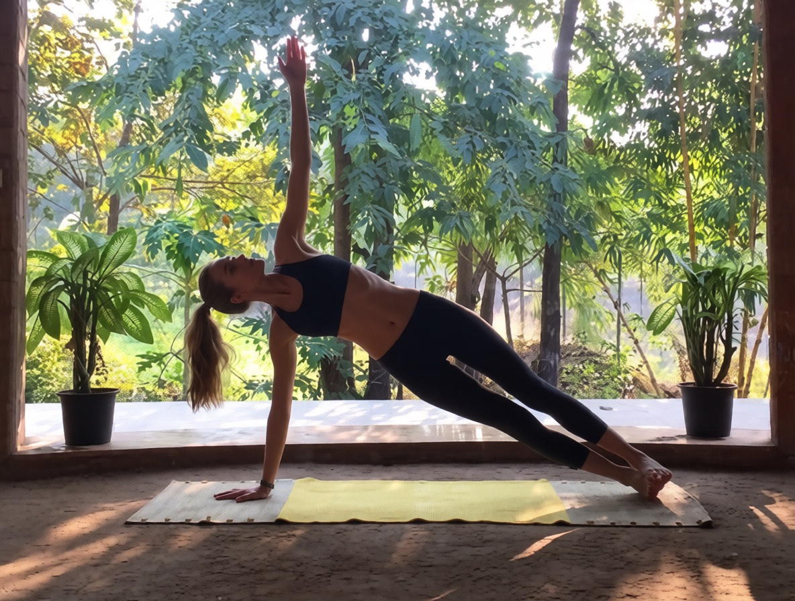

о нас
май лин йога – это онлайн‑платформа для тех, кто хочет начать или углубить практику йоги. мы разработали простые и удобные инструменты, которые помогут вам заниматься с удовольствием и пользой для здоровья. наш бесплатный таймер для медитации позволит точно отслеживать время практики, а коллекция изображений асан с подробными инструкциями поможет освоить правильную технику выполнения.

